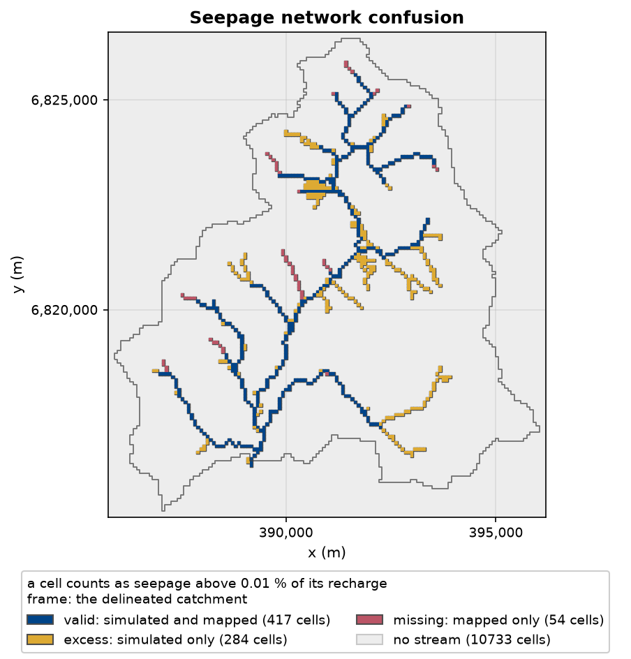
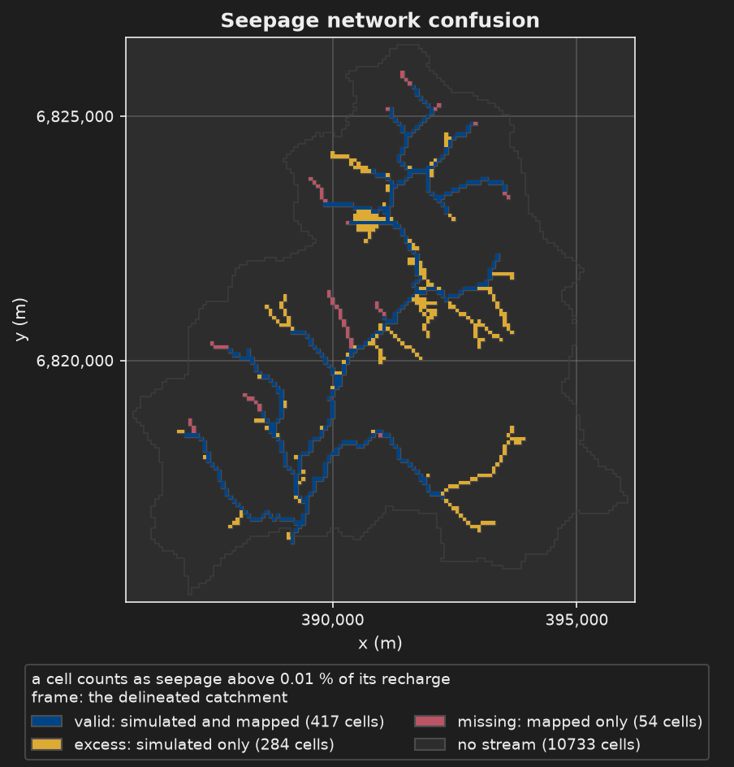

The staircase#
Example 04 models the Nançon catchment (Ille-et-Vilaine) with MODFLOW 6. It ships as a staircase of six TOML files. Each file inherits another one and writes only what it changes, so the page of a step shows you only what that step adds.
Step |
File |
What it adds |
Inherits |
Needs |
Time |
|---|---|---|---|---|---|
|
The shortest file that runs: steady state, local DEM, one K, one recharge rate |
nothing |
the example files |
15 to 25 s |
|
|
The mapped stream network and the gauge, from local files, compared with the simulated seepage |
step 1 |
the example files |
15 to 25 s |
|
|
The same data, fetched from the BD Topage and Hub’Eau APIs |
step 2 |
network, first run |
about 40 s |
|
|
Monthly transient run, 2000-2002, forced by observed recharge and runoff |
step 2 |
the example files |
1 to 2 min |
|
|
The results written out in every format |
step 4 |
the example files |
1 to 2 min |
|
|
Daily run, 2015-2020, recharge computed by a soil reservoir |
|
network, first run |
about 18 min |
Steps 1, 2, 4 and 5 run offline once the example is added. Steps 3 and 6 read APIs on their
first run and use the cache after that. The times are the Run completed figure of the
last line, measured on 2 cores; the command takes 15 to 30 s longer, because Python
starts and imports first.
Step 3 is a variant of step 2, not a rung above it. Step 6 starts again from
project.toml, the frozen reference model of the example.
step 1 ── step 2 ─┬─ step 3 same data, from APIs
└─ step 4 ── step 5
project.toml ── step 6
What each step shows#
One figure of each step, the one that carries its idea. Each page shows the others.






The images come from real runs of these files. The command that made each one is in
tools/docs/figures/figures.toml.
Get the example once#
hmp workspace init ~/hydromodpy
hmp example add 04 -w ~/hydromodpy
cd ~/hydromodpy/projects/04_streamflow_intermittence_in_transient
hmp example add downloads the files of the example, 92 MiB, most of it a regional DEM of
90 MiB. Files are cached by content, so a second workspace costs nothing. hmp example list
shows the examples your version ships and hmp example show 04 lists the files one by one.
Run a step#
Run any step from that folder. Each run writes its figures to runs/<name>/figures/ and
its exports to share/<name>/, where <name> is the simulation.name of the file.
hmp run step1_minimal.toml
import hydromodpy as hmp
run = hmp.run("step1_minimal.toml")
print(run.name)
A relative path is read from the folder you are in. hmp.run returns the
Run, whose reference page lists what it reads.
Run a step twice#
Run an unchanged file a second time and nothing is computed. The command prints two lines on the error stream and exits with code 0:
Config identical to completed run 'nancon_step1_minimal' [3fd2f8e3]; nothing to do.
Re-run with --force to run it again.
hmp run --force computes it again. In Python, hmp.run(path) returns the existing Run
and logs a warning, and hmp.run(path, force=True) computes it again.
Edit the file, even one value, and the second run is a new one. It lands next to the first,
as runs/nancon_step1_minimal.v2/, then .v3, because simulation.if_exists is
"version" by default. Set it to "replace" and the older run goes to the trash instead.
hmp catalog lists, compares and deletes them.